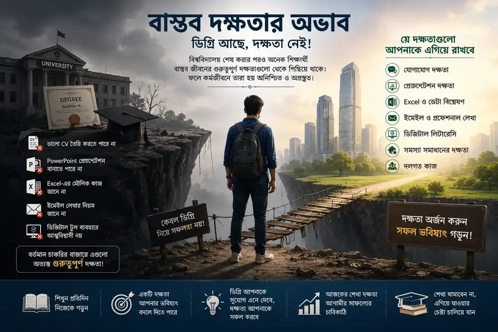

এই লেখায় যা আছে
ভূমিকা: শিক্ষা একটি দেশের উন্নয়নের ভিত্তি। একটি ভালো শিক্ষাব্যবস্থা শুধু পরীক্ষায় ভালো ফল করার জন্য নয়, বরং দক্ষ, সৃজনশীল, নৈতিক ও সমস্যা সমাধানে সক্ষম মানুষ তৈরির জন্য কাজ করে।
১. মুখস্থবিদ্যার উপর অতিরিক্ত নির্ভরতা
আমাদের শিক্ষাব্যবস্থার অন্যতম বড় সমস্যা হলো মুখস্থনির্ভর শিক্ষা। এর ফলে অনেক শিক্ষার্থী ভালো ফল করলেও বাস্তব জীবনের চ্যালেঞ্জ মোকাবিলার দক্ষতা অর্জন করতে পারে না।
২. বাস্তব দক্ষতার অভাব
পাঠ্যবইয়ের তত্ত্বীয় জ্ঞান আর কর্মক্ষেত্রের বাস্তব চাহিদার মধ্যে একটা বড় ফারাক তৈরি হয়েছে। যোগাযোগ দক্ষতা, সমস্যা সমাধানের ক্ষমতা, ডিজিটাল লিটারেসি বা টিমওয়ার্কের মতো দক্ষতাগুলো পাঠ্যক্রমে যথেষ্ট গুরুত্ব পায় না। ফলে সার্টিফিকেট হাতে নিয়েও অনেক শিক্ষার্থী চাকরির বাজারে গিয়ে হোঁচট খায়।
নিয়োগকর্তারা প্রায়ই অভিযোগ করেন — প্রার্থীদের একাডেমিক ফলাফল ভালো হলেও ব্যবহারিক দক্ষতা বা সমস্যা সমাধানের ক্ষমতায় ঘাটতি থেকে যায়। এই ব্যবধানই দীর্ঘমেয়াদে বেকারত্ব বাড়িয়ে তোলে।

৩. পরীক্ষাকেন্দ্রিক মূল্যায়ন ব্যবস্থা
আমাদের মূল্যায়ন পদ্ধতি এখনো মূলত পরীক্ষার নম্বরকেন্দ্রিক। একজন শিক্ষার্থীর সৃজনশীলতা, নেতৃত্বের ক্ষমতা বা দলগত কাজের দক্ষতা এই মূল্যায়নে প্রায় অনুপস্থিত। ফলে "ভালো ছাত্র" মানেই শুধু ভালো নম্বর পাওয়া মানুষ — এই ধারণা থেকেই বেরিয়ে আসা প্রয়োজন।
৪. শিক্ষক প্রশিক্ষণ ও অবকাঠামোগত সীমাবদ্ধতা
পর্যাপ্ত প্রশিক্ষণপ্রাপ্ত শিক্ষকের অভাব, শ্রেণিকক্ষে অতিরিক্ত শিক্ষার্থী এবং আধুনিক শিক্ষা উপকরণের ঘাটতি — এই বাস্তবতাগুলো মানসম্মত শিক্ষা নিশ্চিত করার পথে বড় বাধা হয়ে দাঁড়ায়। গ্রামীণ ও শহুরে এলাকার মধ্যে শিক্ষার সুযোগের বৈষম্যও এখানে উল্লেখযোগ্য একটা সমস্যা।
সমাধান কী হতে পারে?
- দক্ষতাভিত্তিক পাঠ্যক্রম — মুখস্থনির্ভরতা কমিয়ে বাস্তব সমস্যা সমাধান, যোগাযোগ ও ডিজিটাল দক্ষতাকে পাঠ্যক্রমের কেন্দ্রে আনা প্রয়োজন।
- মূল্যায়ন পদ্ধতির সংস্কার — শুধু পরীক্ষার নম্বর নয়, প্রজেক্ট-ভিত্তিক ও ব্যবহারিক মূল্যায়নকে গুরুত্ব দেওয়া দরকার।
- শিক্ষক প্রশিক্ষণে বিনিয়োগ — নিয়মিত ও মানসম্মত প্রশিক্ষণের মাধ্যমে শিক্ষকদের দক্ষতা বাড়ানো জরুরি।
- শিল্প-শিক্ষা সংযোগ — বিশ্ববিদ্যালয় ও কর্মক্ষেত্রের মধ্যে সংযোগ বাড়িয়ে শিক্ষার্থীদের বাস্তব অভিজ্ঞতা অর্জনের সুযোগ তৈরি করা।
- গ্রামীণ-শহুরে বৈষম্য কমানো — অবকাঠামো ও ডিজিটাল সংযোগে বিনিয়োগ বাড়িয়ে সব এলাকার শিক্ষার্থীর জন্য সমান সুযোগ নিশ্চিত করা।
উপসংহার
বাংলাদেশের শিক্ষাব্যবস্থার সমস্যাগুলো একদিনে তৈরি হয়নি, তাই সমাধানও রাতারাতি আসবে না। কিন্তু সঠিক দিকনির্দেশনা, ধারাবাহিক সংস্কার আর শিক্ষার্থীদের বাস্তব জীবনের জন্য প্রস্তুত করার সদিচ্ছা থাকলে এই ব্যবধান ধীরে ধীরে কমিয়ে আনা সম্ভব।
ডিগ্রি একটা সুযোগ এনে দিতে পারে, কিন্তু বাস্তব দক্ষতাই সেই সুযোগকে অর্থবহ করে তোলে।
প্রতিবেদন তৈরি ও প্রকাশনায়: Masum